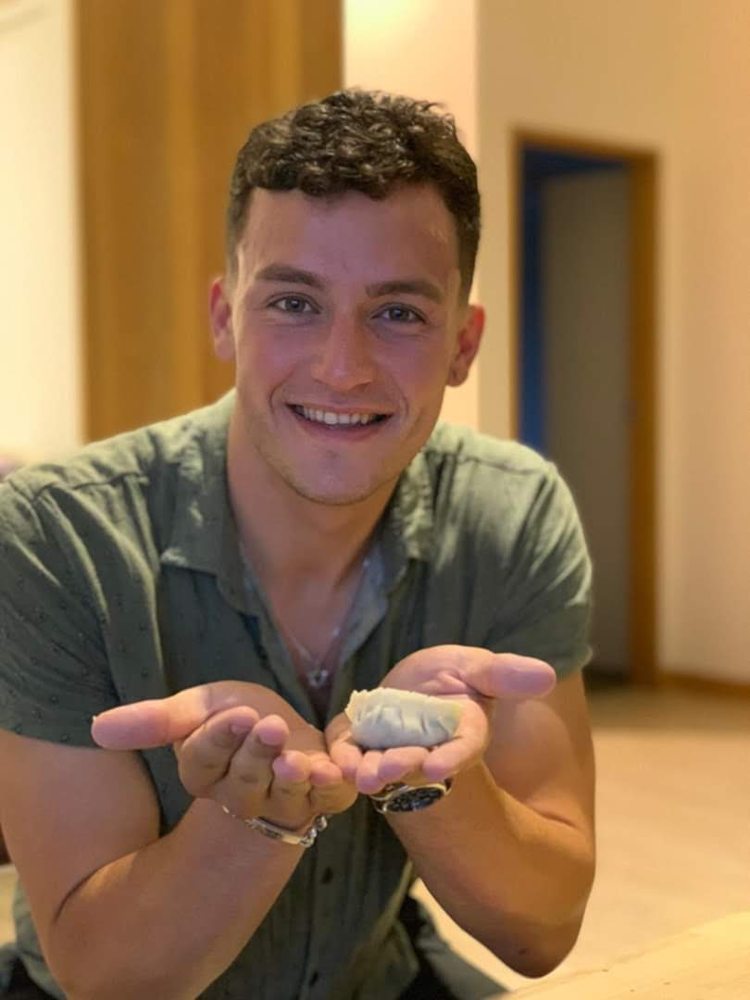

Shai Levin
Shai Levin - Post Quantum Cryptography

This site serves as a repository for some of my projects. You can contact me via shai@science.capetown.
About Me
Raised in South Africa, living in New Zealand. Starting PhD in Post Quantum Cryptography at University of Auckland in 2022 under Steven Galbraith. I love Muay Thai & Mathematics. My mathematical interests include number theory, combinatorics, algebraic graph theory and cryptography.
Projects
- Slides for a talk I've done on Expander Graphs in Cryptography.
- My honours project with a summary of Elliptic Curves, their isogenies, and a way to construct lifts from isogeny graphs.
- My slides for a 'thesis in three' on my honours project.
- A report on an open problem of existence of particular Ramanujan graphs.
- I maintain this website.